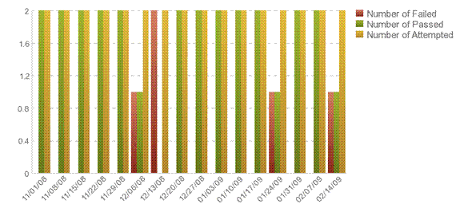

| Build Status |
 |
|
PurposeBuild Status helps the team review product builds statistics, such as the number of attempted builds, the number that were successful, and the number that failed. Build status is an indicator of project health. Impacts of failed builds include:
Monitoring trends in Build Status over time helps the team identify how successfully they are adopting continuous integration best practices. DefinitionCount (in each iteration):
AnalysisA good way to monitor Build Status is with a bar chart. Plot the number of Failed, Passed, and Attempted builds on the Y axis and iterations on the X axis. Expected trend - The number of attempted builds equals the number of passed builds. This trend remains stable or, the number of passed builds is increasing. Number of passed builds decreases over time - Make sure the code has been tested before build integration. Perform impact analysis to identify all dependencies. Generally a high or increasing number of failures (especially later in a project cycle) might be indicating a problem that should be investigated. Confirm that developers are integrating small change sets frequently, following best practices of Continuous Integration. Automate the build process so that it is fast and repeatable and so that issues are identified and conveyed to the appropriate person for resolution as quickly as possible. Following is an example of a Build Status chart, which shows the number of builds passed and failed.  Frequency and reportingBuild status data should be collected each day of the iteration and reviewed during the iteration assessment to help identify trends. Collection and reporting toolsIBM® Rational® Team Concert®collects Build Status data. IBM® Rational® Insight® reports on this metric. |
Licensed Materials - Property of IBM |